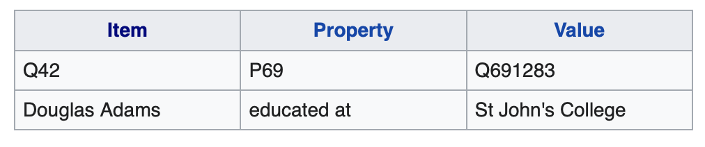

Dieses Tagebuch soll die Entwicklung über das Semester FS2020 im Modul Bibliotheks- und Archivinformatik aufzeigen. Dabei geht es sowohl um neue Erkenntnisse, als auch wie der Unterricht konkret wahrgenommen wird.
Aus dem Berufsalltag in der ETH-Bibliothek bin ich es mir gewohnt mit dem Bibliothekssystem ALEPH zu arbeiten. Allerdings hatte ich noch nie mit der Systemarchitektur dahinter etwas zu tun. Einzelne Begriffe wie MARC21 sind mir zwar bereits begegnet, allerdings hatte ich nie wirklich Zeit mich vertieft damit zu beschäftigen.
Da das Fach in meinem letzten Semester stattfindet, ist meine Motivation leider nicht allzu hoch, vor allem in Anbetracht meiner anderen Module, lerne aber gerne etwas Neues.
Die erste Vorlesung im Modul Bibliotheks- und Archivinformatik war von den üblichen administrativen Informationen geprägt. Was auf dem Semesterplan steht und welche Erwartungen die Studierenden an das Modul stellen können.
Dazu wurde uns von Felix Lohmeier «Library Carpentry» vorgestellt („Library Carpentry“, 2019). Eine Community von diversen Berufsgruppen, welche die Fähigkeiten von Bibliotheken und informations-bezogenen Berufen in Sachen Software und Daten mittels Aufgaben aufbauen und vertiefen wollen. Danach stand die Installation und Einrichtung der Arbeitsumgebung auf dem Plan.
Durch die zur Verfügung gestellte Virtuelle Maschine mit dem Linux-Betriebssystem Ubuntu haben wir die Möglichkeit die vermittelten Lerninhalte auch praktisch zu vertiefen. Da die Praxis in vielen Modulen des Studiums jeweils vernachlässigt bzw. gar nicht gross behandelt werden, ist es zumindest im letzten Semester beruhigend, dass wir nun doch noch eine gewisse praxisnähe erhalten.
Der zweite Teil des Tages wurde leider etwas von der Corona-Krise überschattet, besonders im beruflichen Umfeld von vielen Teilzeitstudierenden, so auch bei mir. Deshalb und auch wegen der fortgeschrittenen Zeit, fiel es mir leider je länger je mehr schwer dem Unterricht zu folgen. Ich versuchte allerdings mein Bestes.
Nachdem die Virtuelle Maschine eingerichtet war und wir uns eingeloggt haben, gab es eine Einführung in die «Unix Shell» und deren Befehle. Dabei kam ein Grundlegendes Problem des Studiengangs wieder zu Tage: Die Fehl-Information, die Studierenden hätten bereits in einem früheren Modul die Befehle kennengelernt. Nach einer kurzen Erklärung konnten wir dieses Missverständnis allerdings beseitigen. Felix Lohmeier zeigte dabei grosse Flexibilität und verlängerte die Zeit, welche wir für die dazugehörenden Aufgaben verwenden konnten. Dabei wurde mir auch schnell bewusst, dass ich die Aufgaben in den Folien nicht zu vorschnell lösen darf, da einzelne Befehle jeweils die vorhergehenden Aufgaben verunmöglichten.
Durch die, daraus resultierende, fehlende Zeit gab es leider nur einen kurzen Input zum Thema Git und GitHub („Build software better, together“, 2020). Den Lerninhalt konnte ich allerdings durch das Einrichten des Lerntagebuches zu Hause vertiefen. Ich entschloss mich dazu einen simplen «One Pager» mittels eines Bootstrap-Templates einzurichten. Der Einstieg in GitHub gestaltete sich leicht. Allerdings kam es beim Einrichten des Tagebuches zu einigen technischen Anstrengungen auf meiner Seite. GitHub wollte schlicht nicht das Anzeigen, was ich wollte und das Ändern der Inhalte führte jeweils zu kleineren Abstürzen der GitHub Desktop App.
Nach einiger Zeit (und einigen Pausen) bekam ich allerdings immer mehr ein Gefühl dafür, wo das Problem lag und kam so immer schneller voran beim Einrichten meines Lerntagebuches. Allerdings hat es mir bei einer Änderung das "Smooth Scrolling" rausgeworfen, was ich auch nach längerem Suchen und analysieren nicht mehr wiederherstellen konnte.
Build software better, together. (2020). GitHub. Zugriff am 21.3.2020. Verfügbar unter: https://github.com
Library Carpentry. (2019). Library Carpentry. Zugriff am 21.3.2020. Verfügbar unter: https://librarycarpentry.org/index.html
Der zweite Unterrichtsblock in BAIN begann erneut mit einigen administrativen Informationen auf Grund der Corona-Pandemie und den ersten Blog-Einträgen. Danach kam es zur Wiederholung des ersten Tages und Auflockerungsübungen betreffend Datenvisualisierung.
Nach diesen Auflockerungsübungen fuhren wir fort mit dem Thema Sicherheit der eigenen und andern Blogs und Seiten. Dabei konnten wir selber nachschauen, ob der erstellte Blog auch bestimmten Sicherheitsanforderungen genügen. So kam heraus, dass Github betreffend Datenschutz eine höhere Sicherheit garantiert als Wordpress oder Jimdo. Github allerdings von der Handhabung etwas schwieriger ist, da es ein gewisses Mass an Programmierkenntnissen erfordert. Meine Basis-Kenntnisse in Programmieren konnte ich aber einerseits durch das Bootstrap-Template lösen, wie auch durch Github etwas vertiefen.
Da Github von unserem Dozenten, Felix Lohmeier, vorgeschlagen wurde, schob er eine kleinere Übung betreffend dem wichtigsten Feature von Github, dem «Pull Request», dazwischen. Die Übung selbst bereitete mir zwar keine grossen Mühen, allerdings wählte ich im Nachhinein den Falschen Branch aus, was im ersten Moment dazu führte, dass ich mir nicht sicher war, ob ich die Übung auch richtig gemacht habe. Die Übung war für mich zwar lehrreich, aber ich bezweifle, dass das die anderen Studierenden, welche Github nicht verwenden auch so sehen.
Danach gab es einen theoretischen Einstig mit Statistiken und Bewertungskriterien für Open Source Softwares, da wir über den Mittag das Bibliothekssystem Koha in unserer VM installieren mussten. Dieser kleine Abstecher war mehrheitlich aus dem Grund entstanden, da viele in den ersten Blogbeiträgen die Begriffe Open Source und Open Access falsch verwendet haben.
Wie bereits erwähnt, installierten wir anschliessend über den Mittag die Bibliothekssoftware Koha in unseren VMs. Die Installation sorgte dabei bei mir kurzzeitig für Probleme. Da ich nicht vertraut war mit Linux, erkannte ich erst nach zwei falschen Passwörtern, dass es dieses in der Unix Shell nicht anzeigt, auch nicht mit Punkten, wie ich es mir von anderen Systemen gewohnt war. Nach dieser Erkenntnis stellte die weitere Installation allerdings kein Problem mehr dar.
Nachdem Koha installiert worden ist, kam es zum einen erneut zu einem kleinen Theorieblock mit anschliessenden Übungen, welche auch hier wenig Mühe bereiteten. Das Interface von Koha ist zwar sehr unterschiedlich zu ALEPH, welches ich beruflich einsetzen muss, allerdings nicht der Grundgedanke und Aufbau dahinter. So konnte ich eine Aufnahme, den Benutzer und die Ausleihe schnell abschliessen. Allgemein war ich der Ansicht, dass die Übungen für Personen, welche in einer Bibliothek arbeiten leider keinen grossen Nutzen, zumindest nicht für mich boten. Nutzer anlegen, Werke katalogisieren oder Ausleihe und Rückbuchungen sind alles Teil meines «normalen» Arbeitstages in der ETH-Bibliothek. Allerdings muss auch hier gesagt werden, dass die Klasse aus Voll- wie auch Teilzeitstudierenden, welche im Berufsleben stehen, zusammengesetzt ist und es daher schwierig ist, die unterschiedlichen Erfahrungen unter einen Hut zu bringen.
Daher muss ich gestehen, dass ich am abschliessenden Teil des Unterrichtsblocks eher passiv als aktiv teilgenommen habe. Was aber sicher auch auf die Konzentration über einen ganzen Tag hinaus zurückzuführen ist.
Die dritte Lehrveranstaltung im Modul BAIN fand auf Grund der Kolloquien ausnahmsweise in Halbklassen an einem Samstag statt. Da mir mein Kolloquium-Gespräch etwas Kopfzerbrechen bereitet hat und ich deshalb schlecht schlafen konnte, nahm ich erst ab dem Nachmittag teil. Dass das Thema Archivsysteme und Repositorien auf dem Plan stand, half dabei leider nicht. Erinnerungen an langweilige Vorlesungen in Archivwissenschaften und digitale Langzeitarchivierung mit ISAD(G) hielten meine Motivation zusätzlich in Grenzen.
Ich stieg in den Unterricht ein, als das Thema BIBFRAME und MARC21 behandelt wurde. Als ich mein Fachpraktikum zum Thema «Weiterentwicklung des Tools MapSeries»in der ETH gemacht habe, bin ich oft über den Term MARC gestossen. Da es allerdings nicht relevant für mein Projekt war und ich weiss, dass es sich dabei um ein Metadatenstandard handelt, habe ich mich nie wirklich damit befassen können. Das scheint allerdings auch nicht mehr nötig, da MARC21 von BIBFRAME abgelöst wird, um Linked Data-Prinzipien zu erfüllen.
Danach ging es weiter mit DSpace, einer Repository-Software. Da wir bereits im Seminar 2018 Open Access als Thema behandelt haben, war es für mich und die anderen IW_tz_16_ZH-Studierenden meiner Klasse eine Repetition. Bewusst wurde mir dies, als wir in Übungen mit DSpace arbeiten mussten.
Aus den oben erwähnten Gründen musste ich mich zur Nachbearbeitung motivieren, was mir leider nur teilweise gelang.
Da meine Abteilung in der ETH-Bibliothek in einer Sektion mit dem Hochschulearchiv zusammengeschlossen ist, habe ich den Begriff ArchiveSpace bereits öfters im Lesesaal als Teil eines Gesprächs aufgeschnappt.
Da ich allerdings mit ALEPH arbeite, kamen mir die Felder in AchiveSpace sehr vertraut vor, weswegen es mir keine grossen Probleme bereitete, diese auszufüllen. Dass ich lieber in Bibliotheken als in Archiven arbeite, wurde mir bei den Übungen erst richtig bewusst. Das Katalogisieren von Büchern gestaltet sich für mich auf Grund der Praxiserfahrungen einfach, Archivalien werden allerdings im Kontext ihres Entstehungszeitrahmens aufgenommen.
Daher muss ich zugeben, dass mir Bücher schlicht lieber sind.
Der vierte Unterrichtsblock begann wie alle mit einem kleinen Rückblick bevor es dann zum Thema «Transformation von Metadaten» überging. Dafür hatten wir im Vorfeld des Unterrichts die Aufgabe uns mit OpenRefine und MarcEdit bekannt zu machen.
OpenRefine ist eine Open Source-Software, mit der Metadaten bereinigt, ausgebaut und in andere Metadaten-Formate transformiert werden können. MarcEdit wird für die Änderung und Erstellung von MARC-Metadaten gebraucht.
Um diese «Crosswalks», also die Konvertierung von einem Metadatenstandard in einen anderen, im Unterricht auszuprobieren, führten wir eine kleine Übung durch. In dieser haben ich und meine Gruppe die MARC21-Daten in JSON, MODS und MARC21XML umgewandelt und in OpenRefine geöffnet. Dabei wurde wahrscheinlich ein Nachteil von OpenRefine deutlich: Die Spaltennamen sind nach dem Import von JSON eher schlecht leserlich, weil die Struktur mit in den Namen übernommen wird.
Danach ging es weiter mit den Schnittstellen/Übertragungsprotokolle SRU und OAI, welche für das Harvesting bzw. Sammeln von Metadaten gebraucht werden. Durch diese Zusammenführung wird ein Bibliothekskatalog ermöglicht, welche institutionsübergreifende Suchen ermöglicht.
Die nachfolgende kleine Übung dazu begann mit einem kleinen Fehler, da wir den falschen Bibliothekscode verwendeten und zu zwei Treffern gelangten. Nach dem Hinweis, dass es deutlich mehr sein sollten, überprüften wir nochmals die Syntax und erkannten unseren Fehler, was uns zur richtigen Antwort (1146) brachte. Die zweite Aufgabe, die Anzeige in einem anderen Metadatenstandard und deren Vergleich, führte uns zu folgenden Ergebnissen:
• MARC-XML mit Dublin Core: Deutlich erkennbar, dass Doublin Core nicht auf Marc basiert, weil die Feldbezeichnungen und Indikatoren fehlen.
• MARC-XML mit ISAD-G: Wenig Überschneidung mit AACR2/RDA, es werden nur sehr wenig Felder übertragen.
Da ich in der ETH-Bibliothek alte Drucke und Karten katalogisiere, war mir der MARC21-Standard bereits bestens bekannt. Für die letzten Aufgaben hatten wir leider keine Zeit mehr, daher hat unser Dozent diese Punkte übernommen.
Am Nachmittag ging es um die Installation von VuFind, einem bibliothekarischen Suchsystem, welche trotz Anleitung von Herrn Lohmeier, zu einigen Problemen führte, so konnte ich es auf der virtuellen Maschine leider nicht zum Laufen bringen.
Da ich im Anschluss allerdings noch einen privaten Termin wahrnehmen musste, reichten auch die ScreenShots für ein gutes Bild über die Funktionen von VuFind.
Der letzte Unterrichtstag begang mit einem Nachtrag zu VuFind. Da ich das System am Vortag nicht zum Laufen bringen konnte, war es von Vorteil, dass Herr Lohmeier dem Problem auf den Grund ging und uns zeigen konnte, wie es doch noch laufen konnte, was bei mir schlussendlich funktionierte. Da ich VuFind mittels der Screenshots in der Dokumentation bereits angeschaut habe, legte ich VuFind schlussendlich beiseite und konzentrierte mich auf den neuen Lerninhalt der aktuellen Veranstaltung.
Danach behandelten wir das Thema Testumgebung für Server-Software und welche unterschiedlichen Möglichkeiten es gibt. Mit VirualBox hatte ich bereits Erfahrungen sammeln können und auch cloud-basierte wie (gerade auch im Kurs verwendet) Azure von Microsoft.
Um dies auch praktisch anwenden zu können, haben wir im Anschluss die Open-Source-Software OpenRefine auf einem Root-Server installiert, bei uns war dies Digitalocean. OpenRefine kann für die Datenbereinigung und -transformation in andere Formate verwendet werden.
Im weiteren Verlauf ging es um das grosse Thema «Linked Data», was im Verlauf des Studiums immer wieder thematisiert wurde und für viele in der Klasse daher nichts Neues war. Im Unterschied zu den anderen Modulen ging es allerdings um den praktischen Aspekt.
So behandelten wir Wikidata, eine von Wikimedia 2012 initiierte Datenbank, welche jeder bearbeiten und nutzen kann. Diese Datenbank beinhaltet Objekte (items) mit ihrer Beschreibung (description), eine Bezeichnung (label) und beliebige Pseudonyme bzw. alternative Bezeichnungen dafür (aliases). Die Items werden jeweils mit einem «Q» und einer fortlaufenden Nummern versehen. Mit Properties, welche ebenfalls nummeriert werden, allerdings statt eines «Q» mit einem «P», können Items schlussendlich zu Statements verbunden werden.
Beispiel eines Statements in Wikidata (Quelle: https://www.wikidata.org/wiki/Wikidata:Introduction)
Anschliessend führten wir mittels SPARQL noch Abfragen in WIkidata aus. Da ich bereits in anderen Modulen wie GSET oder SESY mit SPARQL in Kontakt kam, bildeten die Abfragen keine grösseren oder nennenswerte Probleme.